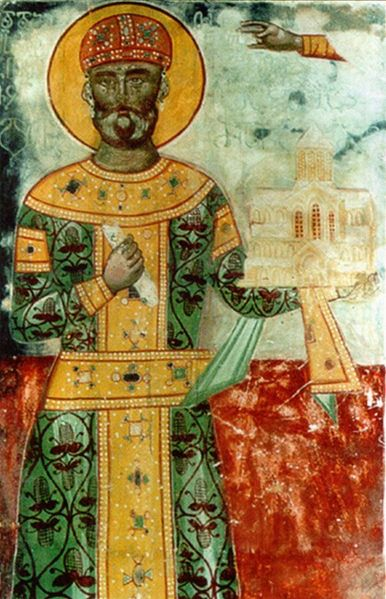

David IV The Builder
The Greatest Georgian King

A fresco of King David The Builder From Gelati Monastery
Here is a timeline of King David the Builder
- 1073 - David was born in Kutaisi
- 1083 - Father the king George II was forced to sue for peace and David became tributary for hte sultan Malik-Sah I
- 1089 - George II ceded crown to his 16-year-old son David
- 1093 - David arrested long time enemy of the crown, feudal of Kldekari Liparit Baghvashi
- 1094 - Expelled Liparit Baghvashi from Georgia
- 1097 - Stopped giving tribute to Seljuk sultan
- 1103 - David abolished dutchy of Kldekari
- 1105 - He held a major ecclesiastical congress in monasteries of Ruisi and Urbnisi and succeeded in removing oppositionist bishops
- 1105 - David's supporters in Kakheti captured local king Aghsartan II and reunited Kakheti to the rest of the Georgia
- 1106 - David won the battle of Ertsukhi
- 1110 - He took over the Fort Samshvilde
- 1115 - Freed City of Rustavi from Seljuks
- 1121 - Won one of the greatest battles in Didgori with 56,000 men against 250,000 - 400,000 men and finally freed Georgia from Seljuks
- 1122 - David captured Tbilisi and returned Georgian capital there
- 1123 - Took over the city of Dmanisi and completely freed Georgia from Arabs
- 1125 - Died at the age of 52
"And the monastery of my burial place, and the crying of my children, were left in me, and the pain of it endured forever."
-David the Builder, "Hymns of Repentance"
You Should Read More About This Great Georgian King In This Wikipedia Article.